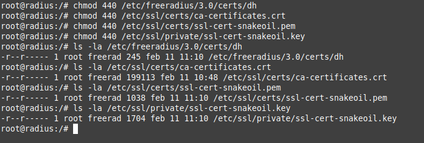

3.1.1. Instalación servidor Radius
1. Introducción
RADIUS es un servicio que integra toda la política AAA (Authentication, Authorization and Accounting) en la gestión del acceso a una red y a sus servicios. En este capítulo, se describe el proceso de instalación y configuración de un servidor FreeRADIUS como centro de un entorno IEEE 802.1X / Wi-Fi permitiendo el acceso a la red mediante usuario y contraseña.
2. Recursos necesarios
- Máquina virtual Ubuntu Server 20.04 LTS en el que se instalará FreeRADIUS. Para poder montar esta máquina se puede crear una máquina virtual a partir de una ISO o descargar una OVA ya creada de linuxvmimages.
- Instalar la utilidad openssh-server para probar posteriormente la conectividad de clientes Linux y Windows mediante ssh con el servidor Radius.
3. Requisitos del sistema
Si se tiene configurado el cortafuegos, hay que añadir unas reglas para permitir el tráfico en los puertos 1812/UDP (para autenticación) y 1813/UDP (para administración de cuentas). Se necesita abrir dichos puertos en el firewall perimetral de la organización en sentido Entrada-Salida.
LAN=eno01
WAN=eno02
iptables -A FORWARD -s $LAN -d $WAN -p udp --dport 1812 -j ACCEPT
iptables -A FORWARD -s $WAN -d $LAN -p udp --sport 1812 -j ACCEPT
iptables -A FORWARD -s $LAN -d $WAN -p udp --dport 1813 -j ACCEPT
iptables -A FORWARD -s $WAN -d $LAN -p udp --sport 1813 -j ACCEPT
4. Instalación y configuración de FreeRADIUS
4.1 Instalación
Para instalar la utilidad freeRadius, estando en el servidor ubuntu con credenciales de root, ejecutamos los siguientes comandos:
root@radius:~#apt update -y
root@radius:~#apt install freeradius
Figura 1. Instalación de paquetes.
4.2 Certificados
El método de autenticación EAP-TTLS no obliga a crear una autoridad de certificación, aunque sí que ese necesario tener un certificado de servidor. Para disponer de dicho certificado se tienen varias opciones:
- Usar el certificado que se crea automáticamente al instalar freeradius.
- Crear un certificado autofirmado.
- Crear una propia autoridad de certificación, con la que se genere dicho certificado (se estudió en la Unidad de Trabajo 2).
Para este caso de ejemplo, se ha decidido utilizar los certificados de freeradius, ya que a efectos finales, todas las opciones son iguales.
Para usar los certificados en otras aplicaciones, la instalación de FreeRadius en Ubuntu Server almacena los certificados en /etc/ssl y en el directorio /etc/freeradius/3.0/certs.
Figura 2. Directorio certs de freeradius.
A continuación, por seguridad se va a restringir los permisos en sólo lectura para el propietario y grupo de una serie de ficheros. En primer lugar se cambia la propiedad de los ficheros siguientes:
root@radius:~#chown root:freerad /etc/freeradius/3.0/certs/dh
root@radius:~#chown root:freerad /etc/ssl/private/ssl-cert-snakeoil.key
root@radius:~#chown root:freerad /etc/ssl/certs/ssl-cert-snakeoil.pem
root@radius:~#chown root:freerad /etc/ssl/certs/ca-certificates.crt
Figura 3. Cambios de propietarios a los ficheros.
A continuación, se restringen los permisos:
root@radius:~#chmod 440 /etc/freeradius/3.0/certs/dh
root@radius:~#chmod 440 /etc/ssl/certs/ca-certificates.crt
root@radius:~#chmod 440 /etc/ssl/certs/ssl-cert-snakeoil.pem
root@radius:~#chmod 440 /etc/ssl/private/ssl-cert-snakeoil.key

Figura 4. Cambios de permisos a los ficheros.
4.3 Configuración
Para la configuración del servidor radius, hay que seguir una serie de etapas que se describen a continuación.
1. Dar de alta un cliente (punto de acceso wifi) al que los usuarios se conectarán a la red wifi.
En el contexto de FreeRadius, un cliente significa los autenticadores, como los puntos de acceso o los controladores WLAN (router). Los autenticadores y el servidor de autenticación utilizan secretos compartidos para verificarse entre sí.
Para incluir en la lista blanca un punto de accesos hay que editar el archivo clients.conf y agregar el cliente como se muestra en la Figura 3. Este cliente proporcionará al servidor freeRadius las credenciales protegidas con una contraseña que se deberán escribir tanto en el archivo clients.conf como, más tarde, en la interfaz del punto de acceso o router wifi. Si se observa la Figura 3, hay que indicar la dirección IP del cliente (punto de acceso o router).
root@radius:~#nano /etc/freeradius/3.0/clients.conf
Figura 2. Edición del fichero de configuración clients.conf.
Se ha añadido esta sección:
client AP-D-Link {
ipaddr = 192.168.1.162/24
secret = eeepsr10
}
donde,
- AP-D-Link: Es el nombre que se le opuesto al cliente radius, que para este caso de ejemplo, será un punto de acceso D-Link.
- ipaddr: 192.168.1.162/24 es la dirección ip del cliente radius (punto de acceso).
- secret: Es la clave del cliente radius (secreto compartido). Usada para cifrar la comunicación entre el servidor Radius y el cliente Radius (AP).
2. Crear un usuario (suplicante) y su contraseña.
Una vez que el AP o router se ha incluido en la lista blanca, hay que agregar usuarios autorizados para autenticarse. Para ello hay que editar el archivo de usuarios users que se encuentra en /etc/freeradius/3.0/ donde se especificarán las reglas de control de acceso, similar a los ficheros ACL de Cisco. El formato debe ser: nombre de usuario Cleartext-Password: = "Contraseña".
Donde,
- La entrada DEFAULT representa cualquier usuario.
- Las entradas del fichero users son procesadas en orden desde el principio hasta el final del archivo.
- Si una entrada contiene el item Fall-Through = No, el procesamiento del fichero se detiene y no se procesarán más entradas.
- Si una entrada contiene el item Fall-Through = Yes, se continúa el procesamiento de la siguiente entrada en orden.
- Si la solicitud de acceso no coincide con ninguna de las entradas, la solicitud será rechazada.
Además se pueden definir un control de horarios para que el servidor sólo permita conexiones dentro de esos rangos.
Si se observa la Figura 3, se está almacenando la contraseña en claro, por lo que no será un método recomendable para un sistema en explotación. No hay un lugar determinado dentro del archivo para añadir la información del usuario, por lo que se añade junto a los ejemplos.
root@radius:~#nano /etc/freeradius/3.0/users
Figura 3. Edición del fichero de configuración user.
Se ha añadido esta sección:
uradius Cleartext-Password := "eeepuc20"
donde,
- uradius: Es el nombre del usuario del cliente que se autenticará en el servidor.
- eeepuc20: Es la contraseña que usará para la autenticación.
3. Mecanismo de autenticación
En /etc/freeradius/3.0/mods-available está el fichero eap que es uno de los ficheros más importantes, donde se define el tipo de autenticación, para este caso de ejemplo, EAP-TTLS. Se indicarán los certificados de servidor que se usarán para establecer la comunicación radius.
root@radius:~#nano /etc/freeradius/3.0/mods-available/eap
El fichero quedaría de esta forma (fichero en github):
4. Accounting
A continuación, hay que configurar el servidor para que registre en el archivo /var/log/freeradius/radius.log los accesos correctos y los intentos de acceso fallidos. Para ello, hay que editar el fichero radiusd.conf que se encuentra en /etc/freeradius/3.0/ y modificar los parámetros: auth, auth_accept y auth_reject.
root@radius:~#nano /etc/freeradius/3.0/radiusd.conf
Figura 4. Edición del fichero de configuración radiusd.conf.
Se han modificado estos parámetros esta sección:
auth = yes
auth_accept = yes
auth_reject = yes
Hay dos parámetros y que son auth_badpass = no y auth_goodpass = no, que están configurados para que no se almacenen en los log las peticiones de autenticación. Puede ser útil activarlos mientras se están realizando pruebas, es decir:
auth_badpass = yes
auth_goodpass = ye
5. Reiniciar el servicio y comprobar.
A continuación, hay que reiniciar el servicio FreeRadius para aplicar todos los cambios realizados y probar la configuración del servidor Radius con el comando freeradius -CX.
root@radius:~#systemctl restart freeradius.service
root@radius:~#freeradius -CX
Figura 5. Prueba de configuración de Radius.
Como se puede observar en la imagen superior, el resultado del comando de testing es 'Ok', por lo que la configuración que se ha realizado es correcta.
También, se puede comprobar el estado del servicio:
root@radius:~#systemctl status freeradius.service
Figura 6. Estado del servicio freeRadius.
También se puede arrancar freeradius en modo debug en lugar de arrancarlo en modo daemon. Esto se puede realizar si se desea comprobar si se están aplicando las configuraciones que se pretenden o para ver si reciben y procesan bien las peticiones de los clientes. Para ello, hay que parar el daemon y luego ejecutar el comando freeradius -X:
root@radius:~#systemctl stop freeradius.service
root@radius:~#freeradius -X
El proceso de instalación y configuración del servidor radius finaliza con esta comprobación.
5. Pruebas de autenticación
FreeRADIUS tiene la funcionalidad de probar el nombre de usuario y la contraseña recién creados ejecutando el siguiente comando:
root@radius:~#radtest uradius eeepuc20 127.0.0.1 0 testing123
Ejecutar el comando localmente significa que el servidor para el que se tendrá que proporcionar la clave secreta es el localhost. Se puede verificar la contraseña de localhost desde el archivo /etc/freeradius/3.0/clients.conf.
Si todo va bien, verá un Access-Accept. si se observa la Figura 7, la autenticación se realiza de manera satisfactoria.
Figura 7. Pruebas de autenticación del usuario radius.
donde,
- 127.0.0.1 0 testing123: Es el cliente predeterminado radius localhost, donde el secreto compartido es testing123.
Figura 8. Cliente radius localhost.
Por último, si se accede al fichero de log, se puede comprobar el registro de la autenticación del usuario uradius en el cliente radius localhost.
root@radius:~#tail -5 /var/log/freeradius/radius.log
 Figura 9. Fichero de log del servidor radius.
Figura 9. Fichero de log del servidor radius.
6. Puesta en marcha
Una vez se han completado las pruebas, se puede iniciar el servicio FreeRADIUS con el siguiente comando:
root@radius:~#service freeradius start
Figura 10. Inicio y consulta del estado de freeradius.
Mediante la herramienta Netcat se puede probar que el servicio está escuchando.
root@radius:~#nc -vu 192.168.0.150 1812
donde,
- -u: Para que netcat trabaje con protocolo UDP en lugar de TCP.
- -v(verbose): Muestra informacion sobre la conexión.
Figura 11. Prueba del puerto listen del servicio freeradius.
Obra publicada con Licencia Creative Commons Reconocimiento No comercial Compartir igual 4.0